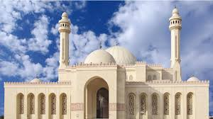
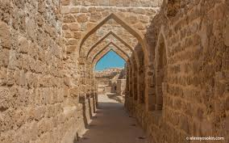
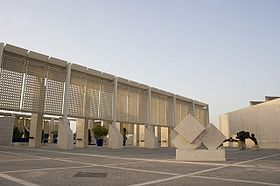

Мечеть Аль-Фатіха
 Одна з найбільших мечетей у світі, яка займає 6500 квадратних метрів і має можливість вмістити понад 7000 молебників одночасно. Мечеть була побудована покійним шейхом Іса бін Салманом Аль-Халіфа в 1987 році і була названа на честь Ахмеда Аль Фатех
Головний купол мечеті, зроблений зі скловолокна і важить понад 60 т. В даний час це найбільший купол зі скловолокна в світі. Аль-Фатіх тепер включає в себе нову Національну бібліотеку, яка відкрилася для громадськості в 2006 році.Мечеть побудована покійним Шейхом Исой ібн Салманом Аль Халіфою в 1987 році і названа на честь Ахмада аль-Фатіха, завойовника Бахрейну.
Калат-аль-Бахрейн
 Місце археологічних розкопок в Бахрейні. Є штучним пагорбом, який був утворений послідовними культурними нашаруваннями приблизно з 2300 до 1700 р. до н. е., що свідчить про постійну людську присутність протягом даного періоду.
Серед інших нашарувань — чимала португальська фортеця; під нею знаходиться стародавня фортеця, що раніше була столицею Дільмуна і дала назву всьому місцю розкопок («кала, калат» — «фортеця»). Збереглася багата археологічна спадщина, яка характеризує цю цивілізацію, раніше відому лише за згадуваннями в шумерських джерелах. У 2005 році це місце було включено до списку Світової спадщини ЮНЕСКО
Національний музей Бахрейну
 Найбільший і один з найстаріших публічних музеїв Бахрейну. Він побудований поруч з шосе короля Фейсала в Манамі і відкритий в грудні 1988 року. Архітектурний комплекс, вартістю 30 мільйонів доларів США, займає площу 27800 м² і складається з двох будівель. Поруч з музеєм знаходиться Національний т еатр Бахрейну.
Відвідувачів на вході зустрічає інтерактивна карта країни, що займає всю підлогу холу. При виборі місця на дисплеї, на карті, стінах і виставці фотографій до неї «прокладається» наочний маршрут за допомогою світлових індикаторів.